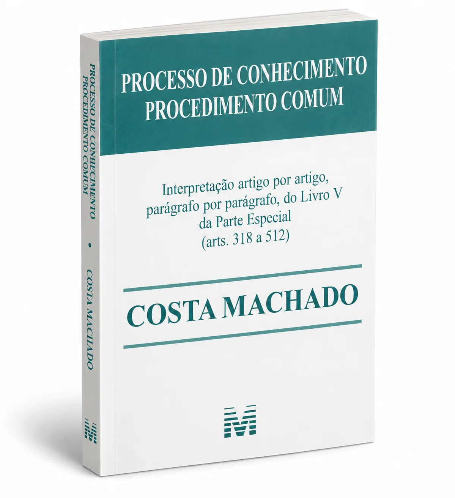
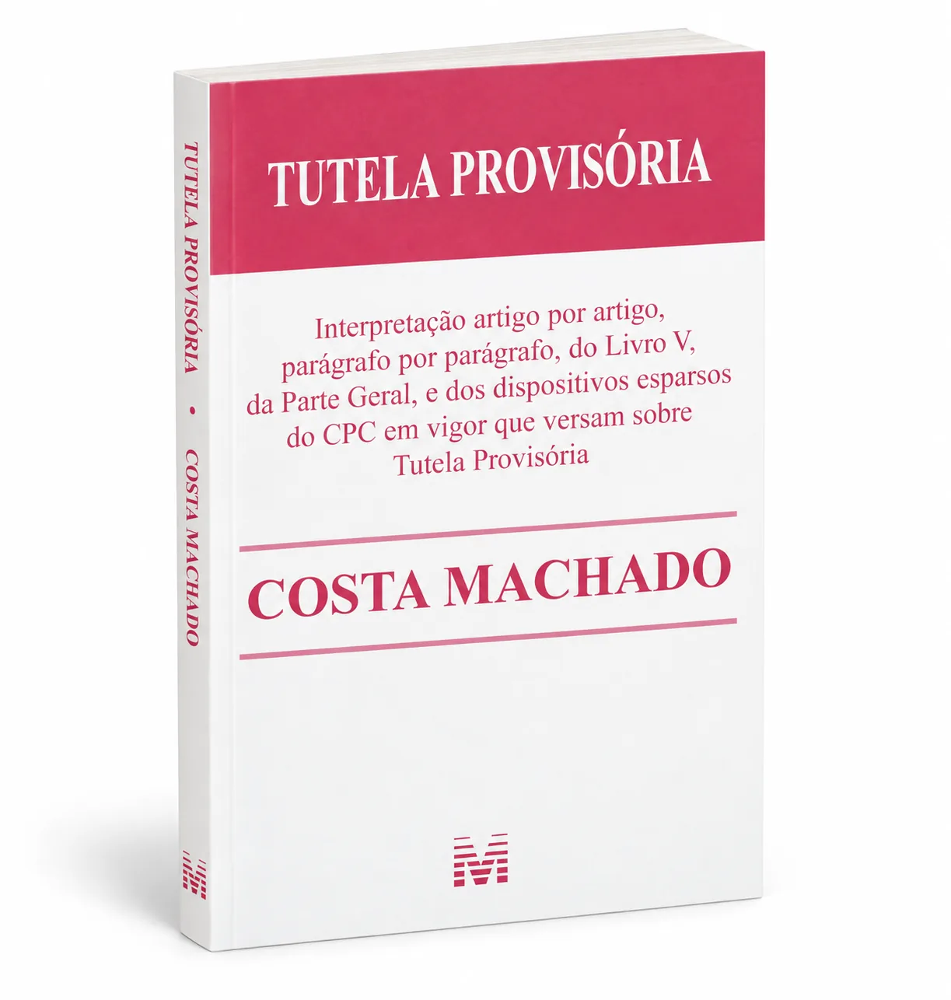
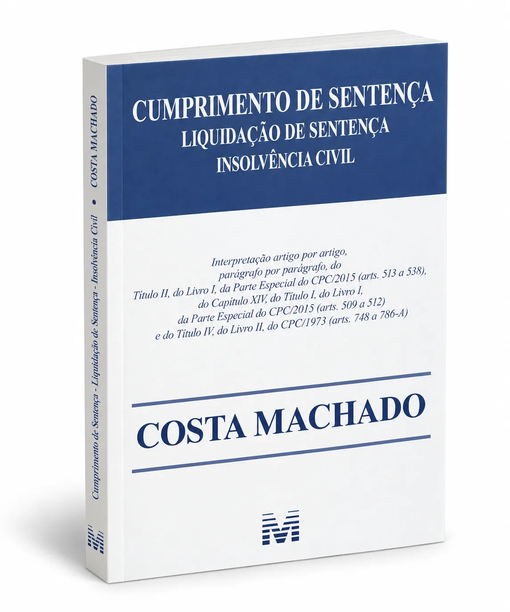
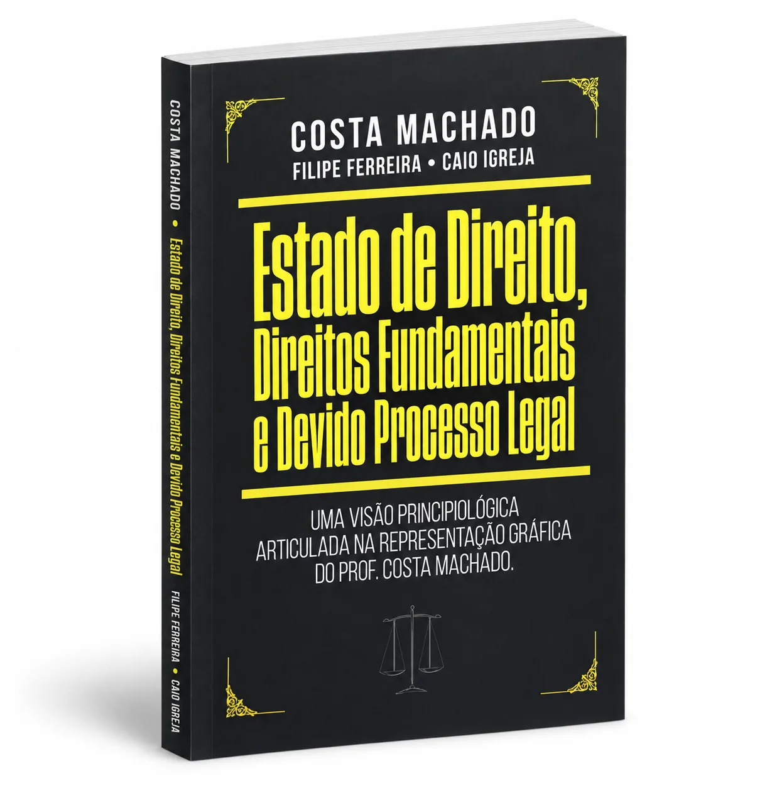
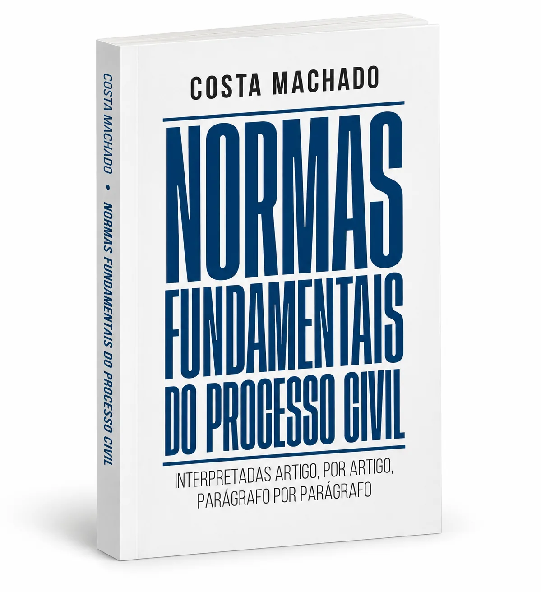
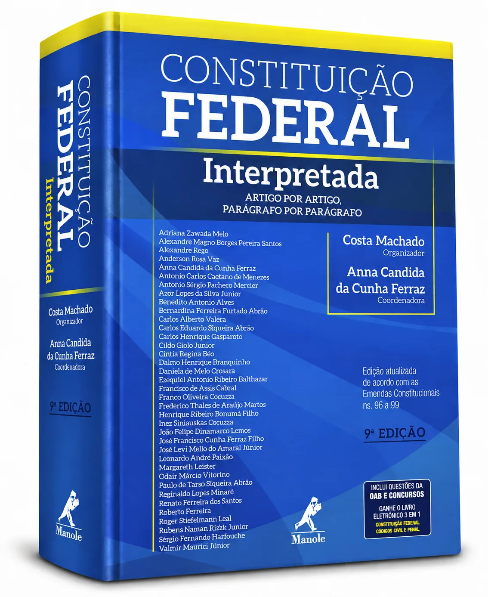
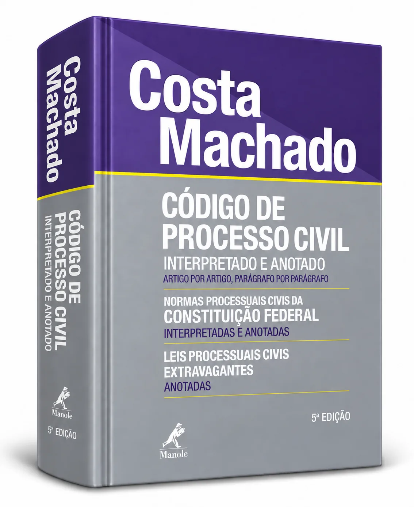
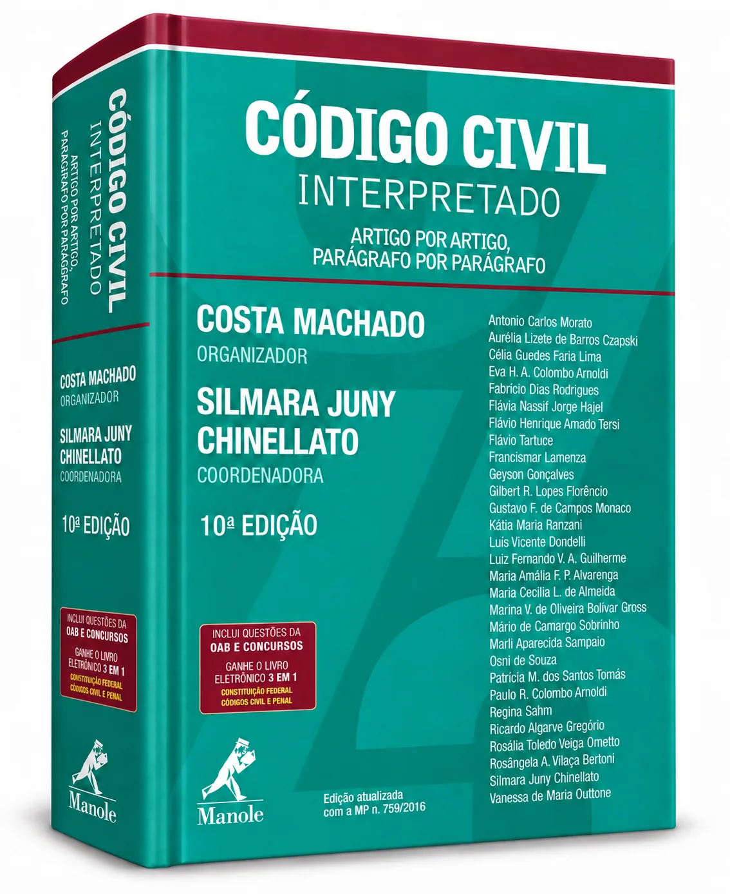
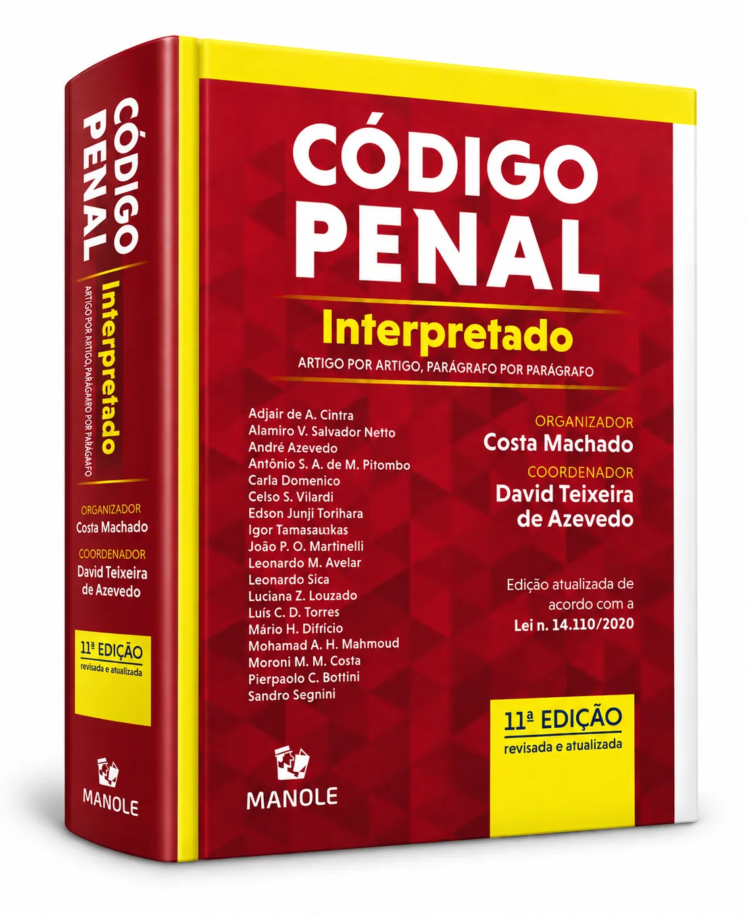
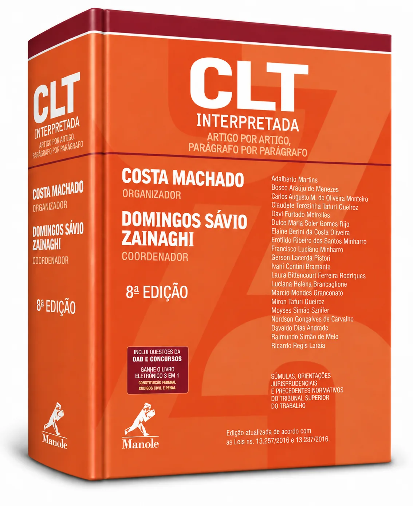

Processo de Conhecimento
Petição inicial, defesa, reconvenção, revelia, provas e sentença, artigo por artigo.
Mais de 10.000 páginas de doutrina jurídica para pesquisar, fundamentar e consultar sempre que precisar — acompanhadas por aulas do Professor Costa Machado.
Uma biblioteca jurídica construída ao longo de décadas para estudar, pesquisar e fundamentar o trabalho diário — no celular ou no computador.

Petição inicial, defesa, reconvenção, revelia, provas e sentença, artigo por artigo.

Tutela de urgência, antecipada, cautelar e de evidência com profundidade prática.

Cumprimento provisório e definitivo, alimentos, Fazenda Pública e obrigações.

Os fundamentos constitucionais do processo e a estrutura do devido processo legal.

Processo, fundamentos, legislação comentada e materiais complementares reunidos para consulta permanente.
Obras interpretadas e anotadas que integram a biblioteca e marcaram a trajetória editorial do Professor Costa Machado.





Outras obras, edições comentadas e materiais doutrinários completam uma coleção com mais de 10.000 páginas. Os títulos acima são apenas uma amostra do conteúdo disponível.
Além da biblioteca, você recebe mais de 50 horas de cursos, aulas e palestras para aprofundar os temas e facilitar a aplicação prática.
Um percurso intensivo pelos temas que aparecem constantemente na advocacia, explicado de forma prática, visual e fundamentada.
Outros cursos, aulas especiais e palestras do Professor Costa Machado completam mais de 50 horas de conteúdo em vídeo. A Maratona do CPC é apenas uma parte do acervo.
Os materiais desta Biblioteca não foram gerados por inteligência artificial.
São livros, cursos, aulas e conteúdos produzidos pelo Professor Costa Machado e autores convidados — fruto de anos de estudo, pesquisa, docência e produção doutrinária.
No meio de uma petição, de uma defesa ou de uma pesquisa, você encontra fundamentação para avançar com mais segurança.
Ver tudo o que está incluído →🔒 Acesso vitalício à coleção desta oferta
Quando o prazo de 24 horas terminar, a condição especial da lista VIP será encerrada.